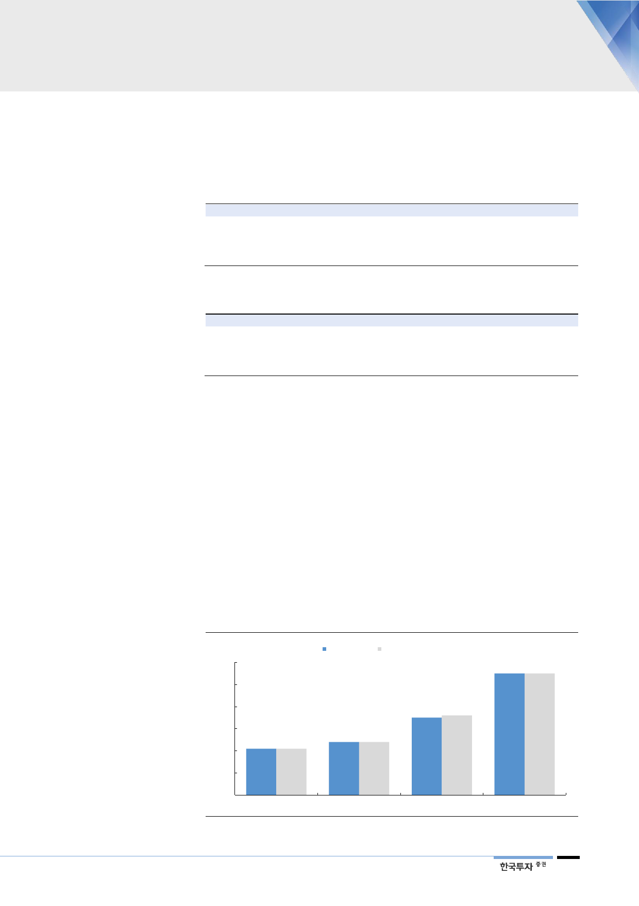

뛰어난 효능
2018년 뇌전증학회(American Epilepsy Society) annual meeting에서 18주간
437명 환자를 대상으로 무작위, 이중맹검, 용량 반응 실험의 결과를 발표했다.
108명은 하루 100mg, 110명은 하루 200mg, 111명은 하루 400mg의 세노바
메이트를 복용했으며 108명은 플라시보를 복용했다.
<표 7> 세노바메이트 투여량별 환자 수
일일 투여량
100mg
200mg
400mg
Placebo
자료: Neurology Llive, 한국투자증권
환자 수
108
110
111
108
<표 8> 세노바메이트의 세부적인 임상 효능 결과
투여 용량 및 위약
100mg
200mg
400mg
Placebo
전체 발작 감소
35
55
55
24
자료: Neurology Llive, 한국투자증권
단순-부분적 발작감소
48
63
58
7
(단위: %)
복합적-부분 발작감소
-
55
60
28
2차성 전신 발작
-
91
78
33
발작빈도 감소 중간값이 100mg군은 35.5%, 200mg군은 55.0%, 400mg군도
55.0%로 나타났다. 플라시보 그룹은 24.0%의 감소를 나타내 플라시보 대비 우
월함을 입증했다. 부분발작 감소의 중간값도 100mg은 48.0%, 200mg은 63.0%,
400mg은 58.5%를 나타냈으며 플라시보의 7.0% 대비 압도적이었다. 또한 임상
2b에서는 10%대까지 발작 증상을 완전히 없앤 고무적인 결과를 도출했다. 빔팻
은 3%대에 불과했던 것으로 파악된다. 복합부분발작(complex partial seizure)
과 2차성전신강직간대발작(secondary generalized tonic-clonic seizures)의
200mg군의 감소율 중간값도 각각 55.0%와 91.0%에, 400mg군은 60.0%,
78.0%에 달했다. 이에 비해 플라시보군은 각각 28.8%, 33.0%에 불과했다. 빔팻
의 임상 2상에서의 200mg, 400mg군의 감소율은 35% 수준에 불과했다. 세노바
메이트의 효능우위를 알 수 있는 대목이다.
[그림 7] 빔팻과의 비교 시 우월한 약효 입증
(%)
60
200mg/일 400mg/일
55 55
50
40
35
36
30
21 21
20
24 24
10
0
Placebo1
Placebo2
Vimpat
Cenobamate
주: Y축은 발작(seizure) 감소의 정도. Placebo1은 Vimpat 임상에서 위약의 발작감소, placebo2는 Cenobamate의 발작감소 수치
자료: FDA, Neurology Llive, 한국투자증권
9